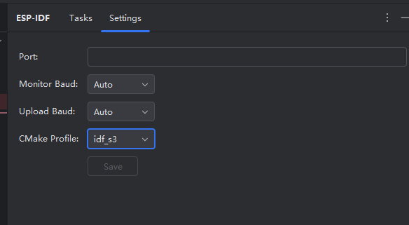
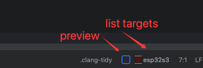
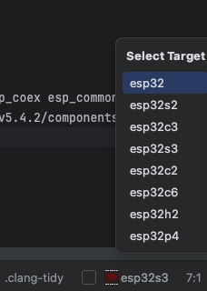
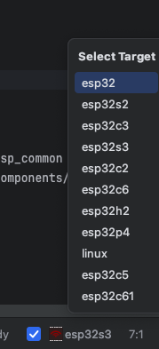
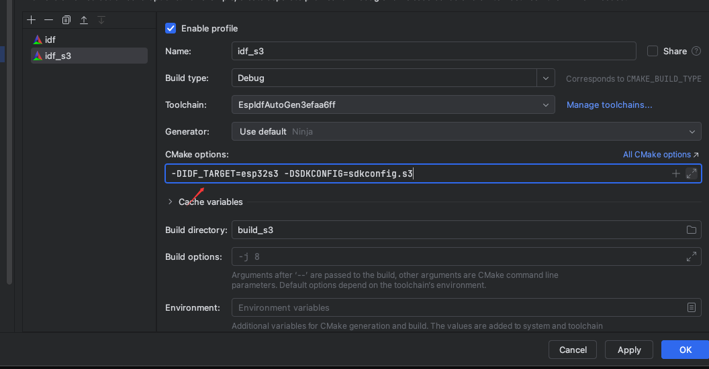

设置
单项目设置。切换到Settings这个tab页。

会使用clion自带持久化能力，保存设置参数。
串口设置
Port 端口号
保存后会在执行命令时候 导出环境变量 ESPPORT。 使用idf.py flash或者monitor时 传给esptool.py和idf_monitor.py的端口号会使用当前变量。
Monitor Baud 监视器波特率
保存后会在执行命令时候 导出环境变量 IDF_MONITOR_BAUD。 idf.py会把会把波特率传给idf_monitor.py。
Upload Baud 烧录的波特率
保存后会在执行命令时候 导出环境变量 ESPBAUD。 idf.py会把会把波特率传给esptool.py。
CMake Profile
可以指定任务树使用的CMake Profile用于执行任务时指定cmake build目录。 可以参考 Profiles
设置Target(芯片类型)
如果是esp-idf项目，build目录生成后，含对应描述json,
默认情况下在右下角状态栏会有本插件的icon和芯片类型

不勾选前面Preview复选框时列出芯片类型

勾选前面Preview复选框时列出芯片类型

点击具体选项，也会按
Preview复选框勾选状态 决定是否添加--preview参数
目前的问题
该命令不属于cmake target，使用无法使用ninja make等执行，设置具体的build输出目录并不能更改具体的目录的target，而只能修改默认的profile对应的target
建议多profile项目通过Profile里面cmake cache变量设置

多profile项目在使用当前功能设置target之后也会触发重新加载cmake,可能会报错target不匹配，可手动删除其build输出目录,重新加载cmake